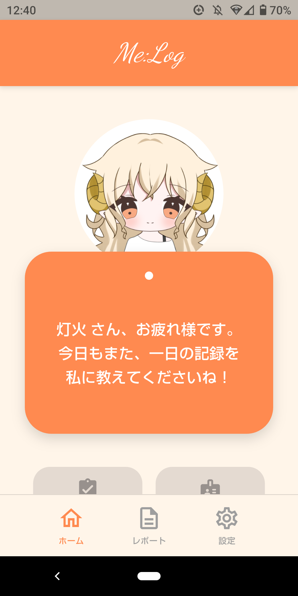
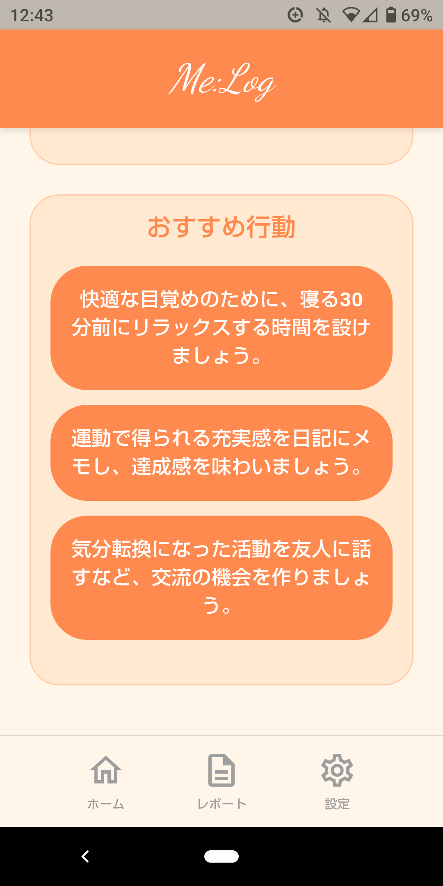

ゲーム依存症軽減に挑戦！ 日記アプリ『Me:Log』

基本情報
- 制作時期
- 大学3年6～1月
- 役割
- 6人チーム（担当：ディレクター、バックエンド実装）
- 使用ツール
- Flutter, Dart, Firebase, Gemini API
- テーマ
- ゲーム依存症をゲーミフィケーションで対策（大学実習課題）
制作のきっかけ
大学の実習科目にて、「ゲーム依存症をゲームで軽減・啓蒙する」というお題が与えられました。初期は既存の対策ゲームを参考に3つの企画を提案したものの、企画プレゼンテーションで全てボツに。
ゲーム/ゲーミフィケーションの活用の難しさを痛感しつつも、一からやり直して日記帳アプリに辿り着きました。
こだわった点・工夫した点
- 寝る前の5分で終わるUI/UX
- AIフィードバックの実装
- 対立の多いチーム内での立ち回り
日記アプリの最大の壁である「継続率」を上げるため、徹底的に入力コストを抑えた設計にしました。その日の気分や睡眠時間、そしてゲームの成績を直感的に記録できるようにしています。これで、ゲーマーがオンラインマッチングを待ったりゲームを終わらせて入眠する前の短時間で書ける日記が出来上がりました。
記録された「生活習慣データ」と「ゲームの成績データ」をGemini APIに分析させ、プレイヤーに対してフィードバックを行う機能を実装しました。
生活習慣とゲーム成績を関連付けたアドバイスをすることで、生活習慣の改善を行う目的に「ゲームの上達・コンディション改善」を入れ込む工夫をしました。
私のチームでは開発中や新機能の会議での対立が絶えず、大きな喧嘩に発展することも少なくありませんでした。
そのような状況では、あえて自分の意見を強く持たず、時に実習室外に出たりして双方の意見を中立的に聞き、解決に向けて動きました。


振り返り・学び
与えられたお題に正面から応えるものにはなりませんでしたが、「ゲームが上手くなりたい」というゲーマーの根源的欲求を原動力として生活習慣を改善させる良いアプリができたと自負しております。
また、チーム開発においては、チームが機能するために不足している役割（今回はバランサー）に自分がなるという、客観的な立ち回りの重要性を深く学びました。